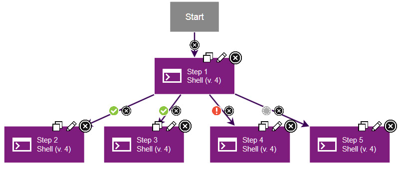
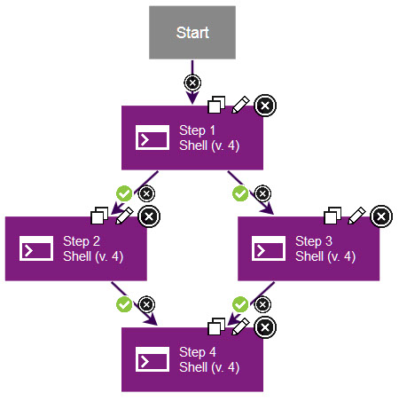
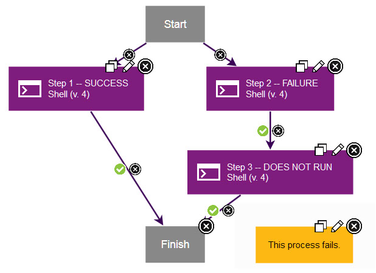
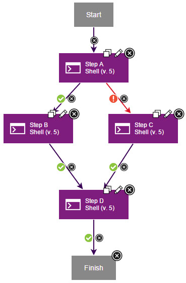
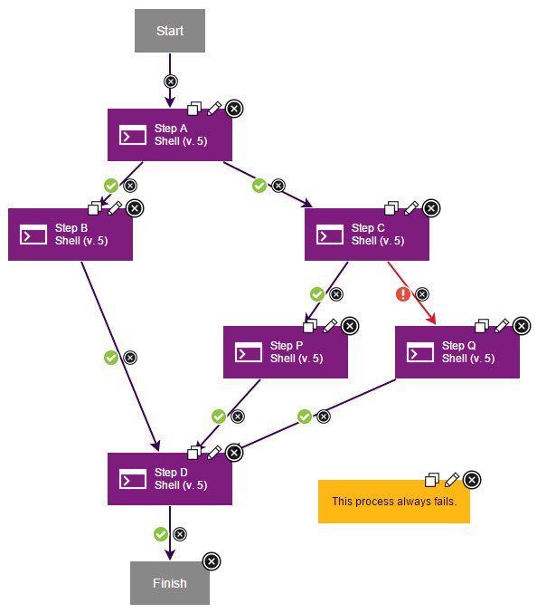
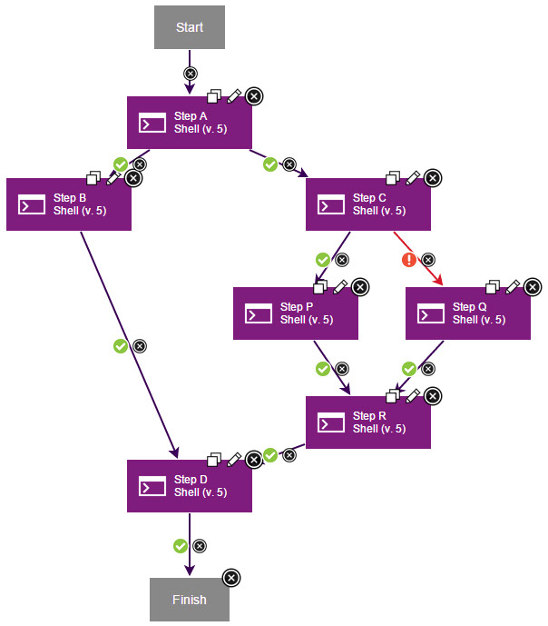
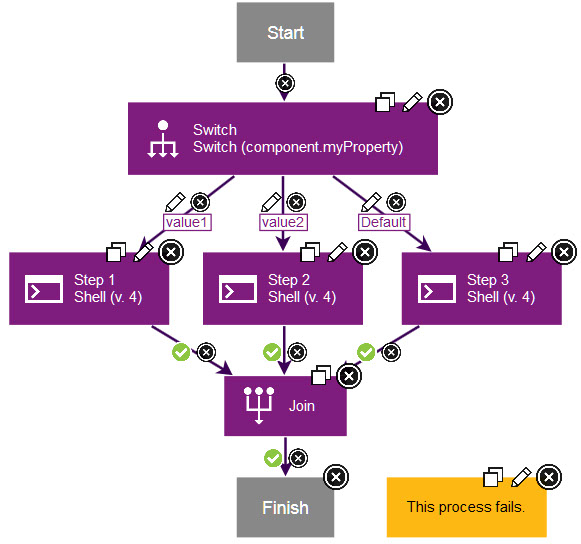
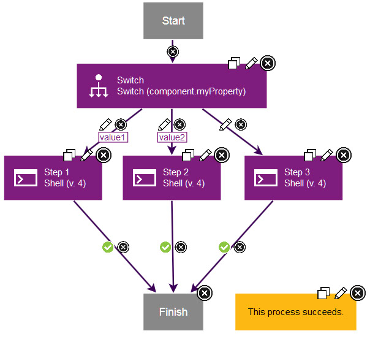

Branching and joining steps
You can branch processes so that multiple steps run at the same time. You can also merge processes to return to running a single step at a time.
Default branching and joining
success, fail,
and both conditional flags, as described in Conditional processes. For example, the following
process shows a step that branches into four steps. Two connections
have success flags. One has a fail flag,
and one has a both flag. 
In this case, if the first step finishes, three steps run at the same time: the connections with
the success flags and the connection with the both flag. If the
first step fails, two steps run at the same time: the connection with the fail flag
and the connection with the both flag.
success conditional flag. In this
case, if either step 2 or step 3 fails, step 4 does not run. Because
all the parallel processes that branch from step 1 have success flags,
all the processes that merge at step 4 must succeed for step 4 to
run. 

success flag
to one parallel process and a failure flag to another
parallel process, only one parallel process can run. Because only
one parallel process can run, only one of the processes that merge
at the merging step must succeed for that step to run. In the following
example, if step A succeeds, step B runs. If step A fails, step C
runs. Step D runs if either step B or C succeeds.
Your process can include nested parallel paths, but you must carefully plan how the parallel
paths merge. The rules for the success and failure flags that you
assign at the branching step control how the parallel paths must merge. If you mark all the steps at
the branching step with success flags, then all the steps that are attached to the
merging step must succeed.
success flags,
all the steps that merge at step D must succeed for it to run. Step
P runs only if step C succeeds and step Q runs only if step C fails.
Because both step P and step Q merge at step D, it is impossible for
all the steps that join at step D to succeed. This process always
fails.

By carefully planning the location of your branching and merging steps, you can ensure that your processes run correctly.
Branching and joining with the Switch and Join step

